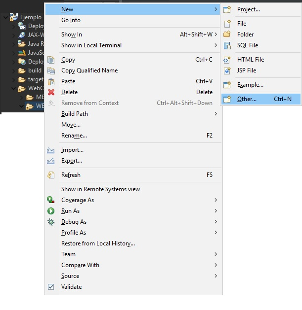
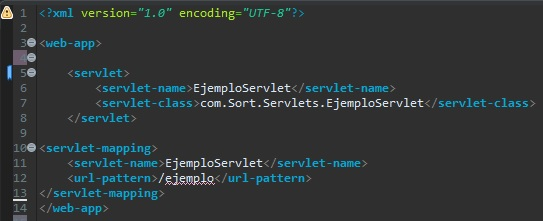
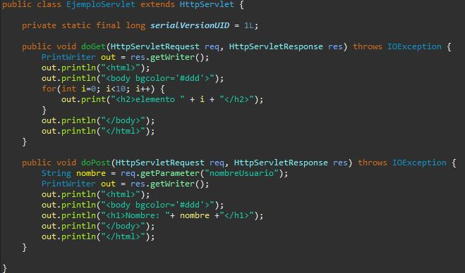

Continuando con el proyecto Ejemplo que trabajamos en la lección anterior, crearemos un archivo web.xml dentro de la carpeta WebContent -> WEB-INF
Dentro, escribiremos el siguiente codigo:
Explicaremos el código:
Declaramos un servlet
<servlet-name>Define el nombre del Servlet
<servlet-class>Define la clase a la que se asocia el Servlet
Asignamos el Servlet a un EndPoint
<servlet-mapping>Establece la relación entre el Servlet y una URL
<servlet-name>Define el nombre del Servlet que queremos asociar
<url-pattern>Define el EndPoint de nuestra url http://host:port + WebAppName
Modificamos nuestra clase asociada al Servlet:
Los metodos doGet y doPost son similares a los de una API